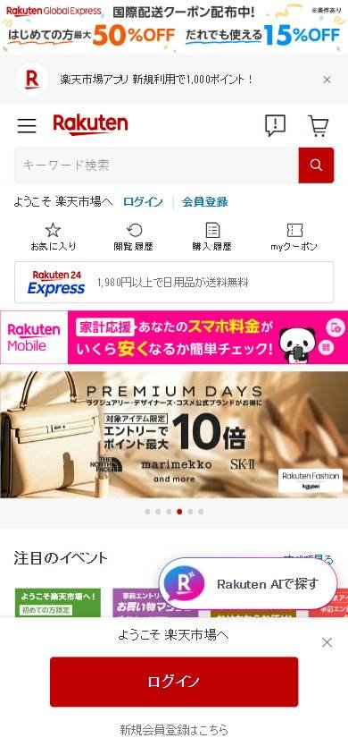
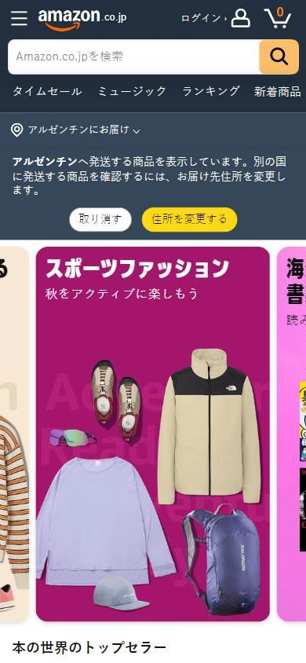
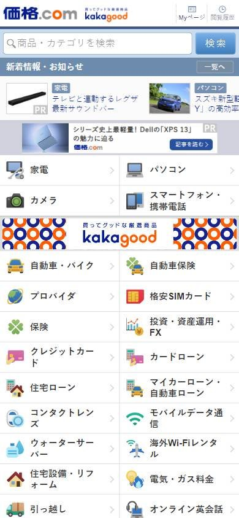

Tienda online que compite por buen precio
Los seleccionados
Los tres sitios más visitados de Japón, según estadísticas de tráfico.
En resumen: lo que hacen los líderes
La pantalla de inicio de cada uno



Estilo visual
Colores, imágenes, tipografía y cuánta información muestran.
Tu estilo visual debería…
- Si tu público es japonés, mostrar mucha información está bien visto; destacá los beneficios con números grandes.
Lo que tienen en común: Densidad muy alta, muchos textos y números grandes de beneficios; la paleta varía según la campaña.
La paleta de cada uno
Medida sobre la primera pantalla. Los colores de marca salen del header; el resto muestra cuánto espacio ocupa cada color.
Así lo resuelve cada uno
Ficha comparativa
| Aspecto | Rakuten | Amazon Japón | Kakaku.com |
|---|---|---|---|
| Paleta | Variada: rojo + muchos colores de promo | Variada: rosa, amarillo, ilustraciones | Acotada: azul + blanco |
| Imágenes | Banners con fotos y textos | Ilustración grande + fotos de categorías | Íconos chicos de categorías |
| Densidad | Muy alta | Media | Muy alta |
| Tipografía | Números muy grandes en promos | Sin serifa | Texto chico, muchos enlaces |
Barra superior
La franja fina de arriba de todo.
Tu barra superior debería…
- Fila superior con enlaces chicos a tus otros servicios o a la ayuda.
Lo que tienen en común: Es común una fila superior de texto chico con los demás servicios de la empresa o avisos.
Así lo resuelve cada uno


Ficha comparativa
| Aspecto | Rakuten | Amazon Japón | Kakaku.com |
|---|---|---|---|
| Existe | Sí, fila de servicios del grupo | No | Sí, avisos en letra chica |
| Contenido | Mobile, Viajes, Libros, Tarjeta… | — | Avisos y enlaces de ayuda |
Header
La franja de arriba con el logo y los accesos.
Tu header debería…
- Íconos a la derecha siempre con texto debajo (carrito, favoritos, puntos).
- Si tenés programa de puntos, mostrá el saldo o los beneficios arriba.
Lo que tienen en común: Header blanco con logo a la izquierda y, a la derecha, íconos acompañados de texto. Los puntos y beneficios del programa de fidelidad están a la vista.
Así lo resuelve cada uno


Ficha comparativa
| Aspecto | Rakuten | Amazon Japón | Kakaku.com |
|---|---|---|---|
| Fondo | Blanco | Negro | Blanco |
| Logo | Rojo, a la izquierda | A la izquierda | Azul, a la izquierda |
| A la derecha | Íconos con texto: compras, favoritos, puntos, carrito | Cuenta, pedidos y carrito | Accesos chicos |
| Puntos o beneficios | Sí, muy visibles | No | No |
Buscador
La barra para buscar.
Tu buscador debería…
- Buscador ancho con botón de búsqueda relleno en el color de tu marca.
Lo que tienen en común: Buscador ancho con borde fino y un botón de búsqueda relleno del color de la marca.
Así lo resuelve cada uno


Ficha comparativa
| Aspecto | Rakuten | Amazon Japón | Kakaku.com |
|---|---|---|---|
| TamañoIgual en todos | Protagonista | Protagonista | Protagonista |
| Estilo | Borde fino + botón rojo con lupa | Selector «すべて» + botón naranja | Borde azul + botón azul «検索» |
Primera pantalla
Lo primero que se ve debajo del header.
Tu primera pantalla debería…
- Si tu público es japonés, no tengas miedo a mostrar mucha información y números grandes de beneficios.
Lo que tienen en común: La primera pantalla es densa: mucho texto, números grandes de beneficios y grillas de categorías. Es una costumbre del mercado japonés, no un error.
Así lo resuelve cada uno
Ficha comparativa
| Aspecto | Rakuten | Amazon Japón | Kakaku.com |
|---|---|---|---|
| Formato | Carrusel con promo de puntos | Banner ilustrado + grilla de categorías | Grilla densa de categorías con íconos |
| Densidad | Alta | Media | Muy alta |
| Textos | Muchos, con números grandes («5倍») | Pocos | Muchísimos enlaces |